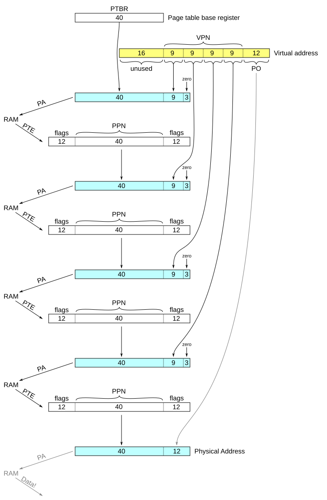

Changelog:
- 30 Oct 2023: link to dive into systems under further resources
- 3 Apr 2024: correct typo in link to cache reading
1 Introduction
One of the most important functions provided by a collaboration between the hardware and the operating system is virtual memory. Virtual memory provides
- each process with the illusion that it is the only process in memory
- each process with the illusion that all possible addresses exist, no matter how much physical memory is available.
- memory protection such that user-mode code cannot access kernel memory.
- an efficient mechanism for communicating with processes.
2 Regions of Memory
To provide process separation, each memory access needs to be checked to ensure it is permitted. Specific sets of permissions may vary by system, but a common set includes
- Read-only vs. read-write memory (e.g. is
mov %rax, addressallowed?) - Kernel-only vs. user-mode memory (e.g. is
mov address, %raxallowed if not in kernel mode?) - Executable vs. data-only memory (e.g. is
jmp addressallowed?) - Valid vs. invalid addresses (e.g. no code can use address 0)
Because most instructions would need to check at least one of these constraints, there is reason to encode them very efficiently. Because each process may access a very large number of memory addresses, they also need to be efficient in space, meaning that in practice, permissions are applied to large contiguous regions of memory.
2.1 Segments revisited
A common internal representation of memory regions used by operating systems is a list of segments, pairs of starting and stopping addresses and a set of permissions for the intermediate addresses.
Segments are never directly visible to the hardware1: instead, the operating system uses the segments to create hardware-visible page table entries and to react to hardware-generated, page-related faults and potentially convert them into signals to convey to the user process.
Because segments are a software-only construct, each operating system can store them in a different way. One simple example might be the following:
struct segment_node {
void *low_address;
void *high_address;
unsigned int permissions_flags;
struct segment_node *next;
}It is common to refer to the crashing of a program that tries to
access an invalid address as a segfault,
short for
segmentation fault.
This is technically a misnomer, as the fault
is generated by hardware, which does not even know about segments; the
generating fault is either a page fault or a protection fault. The
operating system may react to that fault by generating a segmentation
violation signal,
often abbreviated as SEGV or SIGSEGV.
Many people and programs using the term segfault
are aware
that it is technically incorrect; it is arguably an example of a
computing colloquialism.
POSIX-compatible operating systems provide the library functions
mmap and munmap for requesting the operating
system to adjust its segments. Typical user applications use
higher-level wrappers such as malloc instead.
2.2 Pages
Hardware access to memory protections is designed to be very simple so that it can be very rapid. Each address is split into two parts: a page number made up of the high-order bits and a page offset made up of the low-order bits.
Each time memory is accessed in any way—including fetching the instruction itself, meaning at least once per instruction—the address is translated. Translation converts an address as it appears in code (called a virtual address) into an address that can be used to access the memory chip (called a physical address). This translation involves the following steps:
The virtual page number is used as a key or index into a data structure called a page table to retrieve a page table entry (see Page Tables). Conceptually this is what Java would call a
Map<VirtualPageNumber, PageTableEntry>. It is stored in memory, using physical, not virtual, addresses, and its location is stored in a register that is changed on each context switch so that the operating system can maintain a different page table for each process.The page table entry contains a variety of protection or flag bits. In addition to the various read/write/execute/kernel permission bits, it may also contain an
unmapped
flag indicating that this virtual page has no corresponding physical page.If the access cannot proceed for any reason, a fault is generated (a page fault if unmapped, otherwise a protection fault). The fault handler should either modify the page table so that the address will work on a second attempt or kill the program.
If the necessary permissions are present, the page table entry contains a physical page number. This physical page number, concatenated with the page offset from the virtual address, is the physical address.
Hardware uses various optimizations to speed up this process, notably using the Translation Lookaside Buffer.
2.2.1 Protection… but side channels?
Address translation is designed so that the hardware guarantees that
- Only kernel-mode code can change the page table.
- All memory accesses are guarded by the page table.
Combined with careful coding of the operating system, it is intended that these provide full separation of processes, so that no two programs can see the contents of the other’s memory unless they have both asked the operating system to enable that.
Since 2017, it has become known that these protections are not quite as complete as they were once thought to be. Although these protections do ensure that one process cannot directly access another’s memory, they do not guarantee the absence of side-effects of memory access that another process can detect. For example, many hardware accelerations are based on the principle that what happens once is likely to happen again, so timing how long a memory access takes can leak some information about what other memory accesses other processes may have made.
This is one example of how a side channel might exist, and why it is challenging to reason about their absence. Securing primary channels is easy to think about, even if not always easy to do, because the data in question is known. That the timing of individual memory accesses was information that needed protection was not even known for decades after it became a potential side channel.
3 Page Tables
A page table is conceptually just a map between virtual page numbers (which are fixed-size integers) and page table entries (which are each a physical page number and a set of Boolean flags).
3.1 Single-level page tables
In the early days of virtual memory, when the entire addressable space was not large, a single array could suffice for implementing an efficient page table. A special kernel-access-only register, called the page table base register or PTBR, stores the address of this array.
Consider a system with 16-bit virtual addresses. If that memory was broken into 27 pages of 29 bytes each, and if each page table entry consists of 6 flag bits and a 10-bit physical page number, then the single-level page table is an array containing 27 2-byte integers (i.e., 28 bytes in total).
If the virtual address is 1010 1111 0000 01012, then the page offset is 1 0000 01012, and the virtual page number is 101 01112. Thus, the hardware accesses page table entry 101 01112—that is, physical address PTBR + 1010 11102—to find a page table entry. If that page table entry’s flags allow access and it has the physical page number, say, 11 0011 00112, then the resulting physical address is the physical page number (11 0011 00112) concatenated with the page offset (1 0000 01012) for a physical address of 110 0110 0111 0000 01012.
Note that this example maps 16-bit virtual addresses to 19-bit physical addresses: each process is limited to 64KB of addressable memory but the hardware can support 512KB physical RAM.
Single-level page tables are inefficient for 32-bit addresses and basically untenable for 64-bit addresses.
3.2 Multi-level page tables
Multi-level page tables are a particular instance of a linked data structure known as a high-arity (or wide node) fixed-depth tree, which is an efficient way for storing large, sparse arrays, particularly when entries are clustered. Since this is not a data structure that is generally taught in data structure courses, this section provides a full overview of the data structure itself before discussing how they are used for virutal memory.
3.2.1 Fixed-depth high-arity trees
A tree is a linked data structure where each node contains an array of pointers to additional nodes. The best-known tree types use arity-2 (also known as binary or width-2) trees, where the arrays are all 2 elements long, but trees with higher-arity are common when hardware is involved.
Many trees have variable depth: the number of steps from the root to the node containing the desired data may be different for different data. That design allows the tree to scale in size, but also mean that conditional checks are needed at each node. Alternatively, a tree can be designed with a fixed depth, with all data stored the same number of steps from the root. Fixed-depth trees typically store all data in the leaves of the tree, with separate data design for the internal nodes and the leaf nodes.
The following code defines a tree with arity 16 and three levels of intermediate nodes. It has a fixed height of (depending on how you count) 3 or 4.
#define WIDTH 16
struct leaf {
PAYLOAD data[WIDTH];
};
struct height1 {
struct leaf *kids[WIDTH];
};
struct height2 {
struct height1 *kids[WIDTH];
};
struct height3 {
struct height2 *kids[WIDTH];
};
/* ... */
struct height3 *root = /* ... */This tree has the ability to store 164 = 216 =
65,536 PAYLOAD values using a total of 163 +
162 + 161 + 1 = 4,369 pointers, including the
root pointer.
Fixed-depth trees with power-of-two width in each node can be accessed with integer indexes, like an array, by using bit masks to turn indexes into tree navigation. The bits of the index are split up, using the high-order bits for the first tree node index and lower-order bits for subsequent nodes until a leaf is reached.
In the following figure, which uses width 8 instead of 16 to avoid over-cluttering the figure, the value 23 has index 100 111 011 1002.
Continuing the previous code example, each tree can be treated as if it were an array of 65,536 entries:
PAYLOAD arr(struct height3 *root, unsigned short index) {
struct height2 *child1 = root [(index>>12)&(WIDTH-1)];
struct height1 *child2 = child1[(index>>8)&(WIDTH-1)];
struct leaf *child3 = child2[(index>>4)&(WIDTH-1)];
return child3[index&(WIDTH-1)];
}Such a structure is significantly less efficient than a simple array: it requires more memory than a simple array because of the additional pointers; it requires more time because it requires multiple memory accesses per element access. However, it can save significant space if the majority of the indexes have no value, as entire subtrees can be omitted.
By adding intermediate null checks, most of the tree can be omitted if only a few indices are needed:
PAYLOAD *arr(struct height3 *root, unsigned short index) {
if (!root) return NULL;
struct height2 *child1 = root [(index>>12)&(WIDTH-1)];
if (!child1) return NULL;
struct height1 *child2 = child1[(index>> 8)&(WIDTH-1)];
if (!child2) return NULL;
struct leaf *child3 = child2[(index>> 4)&(WIDTH-1)];
if (!child3) return NULL;
return &child3[index&(WIDTH-1)];
}While this code is even less time-efficient than the previous code,
it is significantly more space-efficient if only a few values are in the
array.
For example, if only indices 0–10 (0x0000–0x000A) and
60,000–60,050 (0xEA60–0xEA92) are used, the only non-NULL pointers are
to:
- In the root, 0x0 and 0xE
- in child1 0x0: 0x0
- in child2 0x0: 0x0,
- in child3 0x0: 0x0 through 0xA
- in child2 0x0: 0x0,
- in child1 0xE: 0xA
- in child2 0xA: 0x6 through 0x9
- in child3 0x6: 0x0 through 0xF
- in child3 0x7: 0x0 through 0xF
- in child3 0x8: 0x0 through 0xF
- in child3 0x9: 0x0 through 0x2
- in child2 0xA: 0x6 through 0x9
- in child1 0x0: 0x0
Thus, only ten intermediate nodes and 5 × 16 = 80
PAYLOAD values are allocated rather than the 65,536
PAYLOAD values that would have been allocated for a simple
array.
3.2.2 Multi-level page table implementation
Most programs access only a few megabytes of memory, allocated in a few contiguous chunks, out of a 64-bit address space with 264 = 18,446,744,073,709,551,616 possible addresses. This is, in many ways, an ideal scenario for using fixed-depth high-arity trees to store a very sparse array of page table entries.
x86-64-compatible processors handle 64-bit addresses as follows:
They completely ignore the top 16 bits of each virtual address. 248 = 281,474,976,710,656 is seen as more than large enough an address space for the current generation of software applications.
They use 64-bit page table entries, with larger physical page numbers than virtual page numbers. This does not mean that all physical page numbers are used: it is the OS’s job, when creating new page table entries, to ensure that the physical page number picked corresponds to an actual address in available RAM.
They pick a page size such that every page table node exactly fits in one page.
The most common such page size is 4KB with 29 PTEs per node, using a four-level page table (9+9+9+9+12 = 48). Other page sizes also work: for example, 256KB pages with 215 PTEs per node, using a two-level page table (15+15+18 = 48), fits perfectly, and at a slight loss of space efficiency other sizes can be used as well.
Page size selection is a trade-off. The smaller the pages, the fewer bytes of memory are wasted because of partially-used pages, but the more time and space is devoted to the page table.
At one extreme, 16-byte pages (2 PTE per node) means almost no unused allocated memory but also means 44 intermediate page table nodes separate the PTBR and the PTE.
At the other extreme, 226-byte pages (a single-level page table filling half a page with 222 PTE) means that the smallest possible program needs at least two pages (128MB of memory) to run: one for the page table and one for the code, and a more realistic minimal program with at least 1 page of code, 1 page of read-only globals, 1 page of read/write globals, 1 page of heap, 1 page of stack, 1 page of shared library functions, and 1 page of kernel memory, plus the page table itself, requires 512MB.
4KB pages are generally seen as a nice intermediate point between tiny and huge pages, though how well they compare with other sizes in practice depends in large part on the application domain.
The trade-off between big and small pages becomes more significant as the address space increases. Trying to mitigate this trade-off is part of the reason why x86-64 only actually uses 48 bits of its 64-bit addresses.
x86-64 also allows mixed-size pages, where most pages are 4KB but a
few are 2MB. These big pages
are only used for data, not page
table nodes, meaning some paths down the page table tree pass through
one fewer node (9+9+9+21 = 48). This adds some complexity to the page
table traversal process, but allows the operating system more control
over how pages are distributed.
Each address translation that the TLB does not optimize runs a process similar to the following:
size_t vpn[4] = split_bits(va>>12, 9); size_t ppn = PTBR; for(int i=0; i<4; i+=1) { PTE pte = ram[(ppn<<12) | (vpn[i]<<3)]; if (pte.unmapped) page fault; if (pte.flags & current_usage) protection fault; ppn = pte.ppn; } pa = (ppn<<12) | (va & ((1<<12)-1));
All of the above is performed by hardware, having been compiled down to physical transistors. It is not programmable.
The programmable parts are the fault handlers. A page fault handler (written in the OS software) might do something like
handle_page_fault(size_t va, int access_type) {
int flags = permitted_actions(va, segment_list);
if ((access_type & flags) != access_type)
send_signal(SIGSEGV);
ssize_t ppn = get_unused_physical_page();
if (ppn < 0) ppn = swap_page();
create_page_table_entry(va, ppn, flags);
}The above pseudocode uses several function stubs:
permitted_actions- Check the OS list of segments to see what kinds of access (reading, writing, executing, etc) the segment containing this address allows. If this address is not in a segment, returns that no actions are allowed.
get_unused_physical_page-
The OS maintains a list of all of the physical pages in RAM and which
process is using each. The idea here is to pull one page from the
unused
list onto theused by current process
list. swap_page-
In the event that
get_unused_physical_pagefails to find an unused page, the OS picks a page currently being used by some process andswaps it out
: that is, it- Picks a physical page
- Writes its contents onto a region of disk known as the
swap space
- Changes the PTE for that page such that
- the unmapped bit is set
- the rest of the bits tell where the contents are located on disk
- Change that page to be owned by the current process
- Return the newly-freed physical page number
See Page Swapping for more on swapping.
create_page_table_entry- Ensures that the page table entry is in the page table (possibly creating intermediate nodes in the tree) and sets the appropriate permissions and physical page number in the PTE. If the PTE already exists and notes where in the swap space the old contents of this page are located, loads the swapped-out contents back from disk into memory as well.
An important thing to note about the above: software (the operating system) writes the page table in a format that the hardware understands and can read.
The following depicts all of the lookups used by x86-64’s virtual memory system with 4K pages. Virtual addresses are in yellow, physical addresses in cyan, and page table entries in white.

The three zero bits at the end of the first four physical addresses
accomplish the index × 8
needed to compute the address of an
8-byte PTE by its index.
Of the above
- The user/compiler puts data in memory and picks the virtual address
- The OS puts the data into the PTBR and the PTEs into RAM
- The hardware does everything else depicted
3.3 Translation Lookaside Buffer
Address translation needs to happen for every instruction, at least once to fetch the instruction and a second time if the instruction contains a memory access, so making it fast is vital to keeping the computer efficient.
Modern processors use a special cache called the translation lookaside buffer (or TLB) to keep the most-used address translations in high-speed memory.
Conceptually, the TLB is used as follows:
size_t vpn_full = va>>12;
if (tlb_has(vpn_full)) {
pte = tlb_lookup(vpn_full);
if (pte.flags & current_usage) protection fault;
ppn = pte.ppn;
} else {
size_t vpn[4] = split_bits(vpn_full, 9);
size_t ppn = PTBR;
for(int i=0; i<4; i+=1) {
pte = ram[(ppn<<12) | (vpn[i]<<3)];
if (pte.unmapped) page fault;
if (pte.flags & current_usage) protection fault;
ppn = pte.ppn;
}
tlb_store(vpn_full, pte);
}
pa = (ppn<<12) | (va & ((1<<12)-1));For more details on how caches like the TLB work, see the reading on caches.
4 Usage
Various uses of virtual memory are alluded to above to motivate the various features of virtual memory; this section focuses on those uses.
4.1 Lazy allocation
When a program requests memory or is initially loaded, rather than
having the program wait until all the requested space is actually setup,
the operating system can let the program proceed right away. Then, if
the program tries to access part of that newly allocated space too
early, the operating system can finish setting it up in the page table
handler. This lazy
allocation idea might, for example, help
programs start faster.
4.2 Page Swapping
Because addresses in code can be mapped to other addresses (with
operating system intervention if needed), virtual memory lets code act
beyond the constraints of available memory. This is traditionally
handled by the operating system storing some pages on the disk instead
of in memory. moving these pages between disk and memory is called
swapping.
(If the program tries to access pages that are not in
memory, the operating system can trigger swapping from the page fault
handler.)
Because disks are vastly slower than memory, there is a desire to make this happen rarely, meaning that operating systems sometimes devote significant effort to selecting pages to swap out of memory that it believes are likely not to be swapped back in again anytime soon. Predicting which pages will be needed next is undecidable2, so this is always at best a heuristic and sometimes incorrect. If it is consistently incorrect (or there is not enough physical memory available for accuracy to matter) and the process begins spending more time swapping pages in and out than it does doing actual work, it is said that the process is thrashing.
As memory has become less expensive and more plentiful, swap is arguably3 less important than it once was, but it is still a part of every major end-user OS.
4.2.1 Shared Memory
One of the goals of virtual memory is to allow each process to have its own address space, but because this is done by having a mapping between virtual and physical pages, it is quite possible to map the same physical page into multiple different processes’ virtual address spaces—potentially even to have the same physical page mapped to different virtual pages in each process.
Shared memory, as this is called, is used for several purposes, notably including the following:
- Shared libraries.
-
If several programs are going to load in the same shared library code, it can be more efficient to have its code in just one physical page shared in each process’s virtual address space.
Not all libraries are linked in as shared memory. Since shared memory must come in in full page chunks, shared memory library linkage can be inefficient if library code is small or not shared by several running processes. Additionally, sharing library code requires all processes that use it to use the exact same version of the code; as library code is frequently updated, this can itself be a challenge to engineer around.
Static library code is linked during compilation, while shared (also called
dynamic
) library code is linked by the loader or in some cases even part-way through execution. - Kernel memory.
-
Consider the page of memory that contains the instruction that changes the PTBR. For the next instruction to be fetched properly, that instruction’s virtual page needs to map to the same physical page in both the old and new page tables.
Different operating systems handle this differently; in Linux, for example, half of the entire address space (all with addresses 0x800000000000 or above) is reserved for the OS and is mapped to the same set of physical pages in every process’s page table.
- Shared-memory communication.
- Processes can communicate with one another by each reading what others have written into a shared region of memory. This can be a very efficient way of sharing large quantities of data but does not, by itself, provide mechanisms for efficiently awaiting a response.
- Memory-mapped files
-
As an alternative to reading and writing a file with system calls, many
operating systems allow a process to
map
a file into their memory. The bytes of the file then appear as bytes in that process’s memory. The operating system can ensure that all processes share a single copy of the file’s data, so the bytes always reflect the current version of the file.
4.3 Process Switching
Switching between processes happens in the operating system’s code. When the OS was invoked (in an Exception Handler), the state of the original process was stored somewhere; when changing processes,
- the saved user state is moved into an OS data structure to track the not-currently-running processes.
- the PTBR is changed to point to the page table of the new process, and the user page table entries in the translation lookaside buffer are marked as invalid.
- the saved state from the OS data structure is moved back into the saved user state location to be restored when the exception handler returns.
As this happens in operating system software, other computation is often attached to it. It is not uncommon for the operating system to perform many different bookkeeping and other operations each time a context switch is performed.
4.4 Direct Memory Access
Physical memory pages can be given to systems other than software processes. It is common for various input/output operations to be performed by allocating a page (or more) of memory to be accessed directly by the I/O systems. This direct memory access model allows I/O to happen at the slower pace of I/O systems concurrently with the processor doing other work as well as the processor to access it at the higher speed of memory access once the transfer into or out of memory is completed. This model is called direct memory access (DMA).
Technically, DMA does not require virtual memory—disks could be given access to physical memory even if code accesses memory with physical addresses—but it is generally implemented as an extension of the virtual memory system.
5 Further resources
5.1 General
Arpaci-Dusseau and Arpaci-Dusseau, Operating Systems: Three Easy Pieces chapters 13, 15, 18, 36. More detailed textbook on all these topics, intended in the context of a more dedicated operating systems course.
Dive into Systems, Chapter 13.3 — doesn’t cover multi-level page tables, but covers idea of virtual memory
5.2 Virtual memory system examples
Levy and Lipman (1982),
Virtual Memory Management in the VAX/VMS Operating System
in IEEE Computer. An old virtual memory design that looks very similar to those of today.x86-64 paging hardware
OSdev wiki’s (hobbiest OS developer resource) description
The complete but difficult to read references: Volume 3, Chapters 3-4 of Intel’s x86 manuals or Volume 2, Chapters 4-5 of AMD’s x86 manuals. Describes the virtual memory system actually implemented by x86-64. This is made much more complicated because 32-bit x86 supports segmentation and paging simultaneously. In segmentation, rather than dividing up memory into many fixed-sized pieces, it is divided up into fewer, variable-sized pieces. Most operating systems on x86-64 mostly avoid using segmentation but use paging extensively.